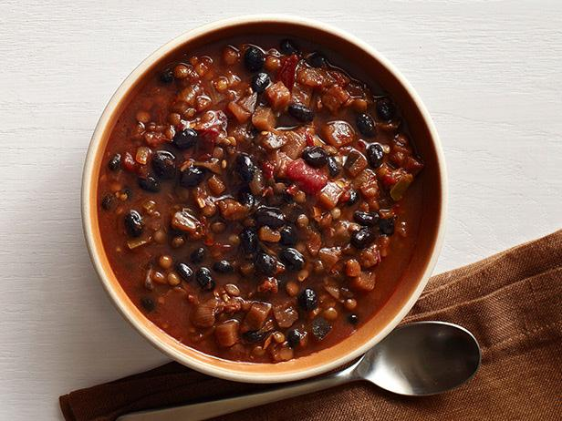

Black Bean Chili

A chili that is best when prepared with fresh vegetables, but still delicious with canned or frozen. Serve by itself or over rice.
Ingredients
- 1 tablespoon olive oil
- 1 onion, chopped
- 2 red bell pepper, seeded and chopped
- 1 jalapeno pepper, seeded and minced
- 10 fresh mushrooms, quartered
- 10 fresh mushrooms, quartered
- 1 cup fresh corn kernels
- 1 teaspoon ground black pepper
- 1 teaspoon ground cumin
- 1 tablespoon chili powder
- 2 (15 ounce) cans black beans, drained and rinsed
- 1 ½ cups chicken broth or vegetable broth
- 1 teaspoon salt
Steps
- Heat oil in a large saucepan over medium-high heat. Saute the onion, red bell peppers, jalapeno, mushrooms, tomatoes and corn for 10 minutes or until the onions are translucent. Season with black pepper, cumin, and chili powder. Stir in the black beans, chicken or vegetable broth, and salt. Bring to a boil.
- Reduce heat to medium low. Remove 1 1/2 cups of the soup to food processor or blender; puree and stir the bean mixture back into the soup. Serve hot by itself or over rice.